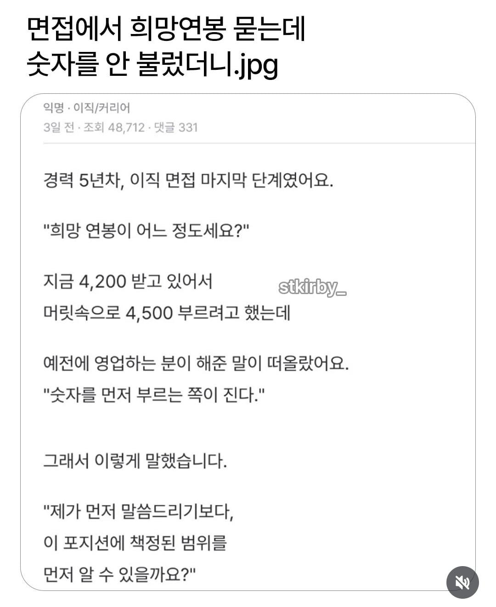
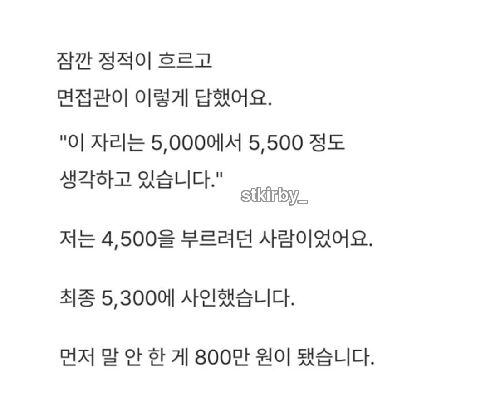
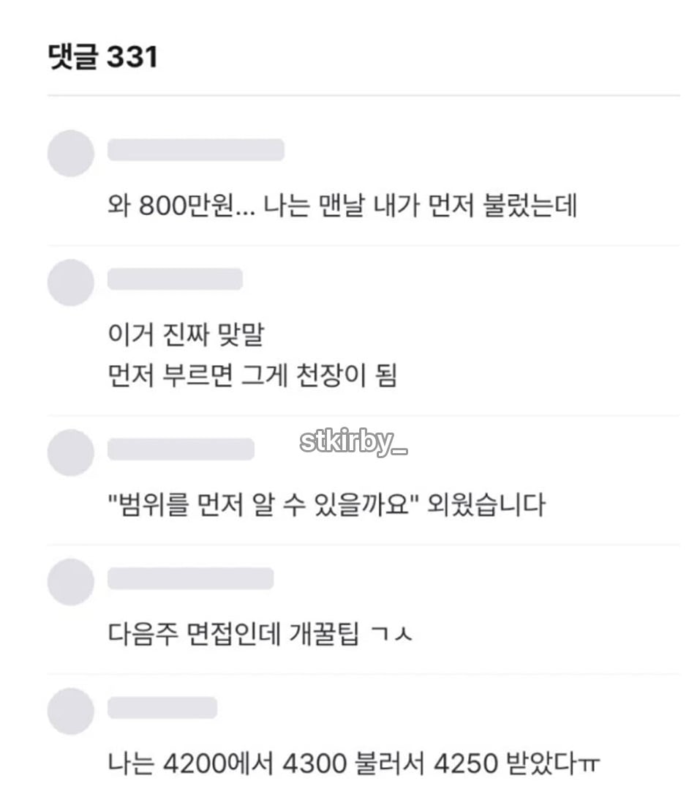

선제시요



선제시요
어마어마 하게 열심히 산 개붕이었군…
추석 잘 보내셈
지랄하지 마세요
어떻게든 적게 주려고 원징 떼오라 그러는데ㅋㅋㅋㅋ
이게 마따
맞지 ㅋㅋ 원징떼가서 이미 얼마받는지
다 아는데 그냥 회사가 주던돈을 그대로줘??
원징 떼오라고 하지 않나. 그거 보면 저렇게 제안 안할 건데
맞음
저건 주작이지
좆소거나 주작이거나
ㅈㅅㅇ
개병신 백수새끼가 뇌내망상 한거네
어느 면접관이 미쳤다고 지 패를 먼저 까냐 ㅋㅋㅋ
ㄹㅇ ㅋㅋㅋ
걍 전직장 얼마 받았냐 얼마 생각하냐 묻지
ㄹㅇ 전직장 얼마지 물어보지ㅋㅋ 희망연봉같은소리 ㅋㅋ 어차피 면접관 지갑에서 빠지는돈도 아니라 걍 궁금해서 바로 그전에 얼마받냐 물어봄. 구라치면 나중에 서류구비할때 구라처서 최종합격 번복될 가능성이크지. 누가 모험하노 어차피 원징 무조건 까야되는디
저 스토리가 사실이라면 사실 회사는 8천쯤 쓸 생각이었다는게 정설
선제아니면 취업안함 ㅅㄱ
회사 내규에 따른다가 아니라?
중소기업은 전직장 +20-30% 냅다 지르면 되고
대기업은 어차피 테이블이라
연봉 협상이 아니라 통보로 올거
기존 경력을 몇년 인정해주냐가 다른정도고
맞음. 좆소경력은 그냥 짤리는데 이게 연차 테이블 한칸씩 낮아지는거라 원징보다 더치명적임. 전직장 연차 인정이 젤 중요함. 그래서 다들 좆소가지말라는거. 좆소 꼬리표는 대학 간판처럼 평생감
애초에 희망연봉 부르는게 좀 어이없음. 저걸 뭐하러 물어봄? 규정내에서 주고 더줄것도 아니면서
난 그래서 희망연봉란에 고민없이 그냥 1억 넣음.
우리회사 신입 뽑는데도 희망연봉 적더라. 우리 회사 양식인지 그냥 자유양식인지 모르겠으나
원래 6000받던 포지션이 나가고
면접보는 사람이 전에 4000받았으면 너무 많이 올려준다고 ㅈㄹ함ㅋㅋ
좆소 아님? 면접관이 금액까지 신경쓴다고?
맞지 뭔 면접관이 급여를 챙겨
좆소망상이죠
선제자겨아님즐
저거 믿는놈들은 회사를 안다녀봤거나 한군데정도만 다닌거임ㅋㅋㅋㅋ A포지션을 회사에서 5000~5500을 생각한다? 그럼 A보다 낮은 포지션은 4000~5000사이임. 근데 A 포지션 입사자가 4500생각한다고 먼저 말해도 회사 내규가 있어서 4500에 도장 안찍음. 더 심층면접 진행해서 5000~5500사이로 되지ㅋㅋ
위에 정사판 쟤 쉽지않네
급여명세서12개월치 제출하라던데.
심지어 포상도 단발성인지 고정으로 나오는건지 다 물어보고 최대한 깎으려고 함
개씹 주작 망상 좀 그만해...
면접 마지막 단계면 보통 임원 면접이나 대표이사 면접일건데
최종 면접에서 저 지랄 하면 바로 광탈이다 명심해라 가장 좋은 답변 알려준다. 받아 적어라.
"처우와 관련한 조건은 우선적인 고려 대상이 아니어서, 회사에서 적절히 내규에 따라 책정 해주실 것으로 생각 합니다. 입사 이후의 업무 성과나 퍼포먼스를 통해 제 가치를 증명해 보이고 싶습니다. 감사합니다."
참고로 연봉 협상은 면접 테이블에서 하는 게 아니다. 면접에서 일단 '최종 합격'을 확보 해 놓고
그 이후에 인사팀과 밀당 하는거다.
정상적인 회사 기준 이게 맞지 ㅋㅋ


원징 떼보고 기싸움 시작하는거지 뭔 ㅋㅋㅋ
미국에선 통하는 얘기인데 한국에선 절대 아님
전년도 원천징수영수증/직전 3개월 급여 명세서 달라고 하던데. 상방이 확실히 있음.
너무 이상적인 인사담당자와 채용문화네
한국에선 아마 없을것같은
난 저래 해서 이전 연봉 더블로 받음
외자계는 가능한곳이 몇몇 있을듯
개쎄게불러야됨. 직전에 5천받았고 뭐 잘하면 6천으로 이직할 생각이라면 내 가치 싹싹긁어서 8천이라고 어필해버려야됨
물론 실적 있어야되고 레퍼첵 든든해야됨.
그렇게 지르면 솔직하게 테이블이랑 밴드 알려주는데 거기 최상단 찍고 사이닝같은거 좀 받으면 됨
선제시염
스타트업이면 면접관이 저럴 수도 있을듯. 대기업이면 최종 면접 합격 후 HR 연봉협상 때 HR이 먼저 선제시함.
클로드 말투인데 완전 빼박으로... Ai 소설임
이직시엔 500~1000이상 불러야함 그다음 조정하면돼
케이스가 세개임.
1. 전직장 연봉대비 +x%되는 케이스 - 제일 흔함
2.그냥 연차산정해서 연봉테이블에 맞추는 경우 - 중견이상 에서 간혹 보임. ㅈ소다니다가 연봉 점프 뛰기 제일 좋음
3. 그냥 지르는 경우 : 예전 토스가 이랬다고함. 그냥 대표가 면접에서 너 두배 ㅇㅈㄹ했다는 썰도 있음
아무튼, 면접에서 저러는게 흔하진 않지만 있긴 함. 없는 케이스는 아니야. 인사팀이 면접에 같이 들어갔거나, 현업에서 너무 마음에 들어 인사팀에 압박넣는 경우(ㅅㅂ 얘 마음에 드는데 놓치면 니탓으로 보고할꺼임)가 있음.
전직장 원징이야 보통 이새끼가 말한게 구라가 있나 보려고 하는거구..
테이블 정해진 공채만 해봤어서 아예 모르는 세계임.. 몸값을 협상한다는 게 생소
외국계 반도체 장비사인데 계약연봉이 저만큼 오르는건 아니고 성과금이랑 잔업이 오르는게 큰듯